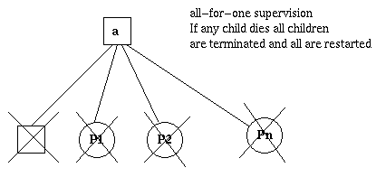

Actor model paradigm
Jonathan Muller / @bhaal22
Motivations
- Concurrency = performing 2 operations in tandem (processing 2 webrequests)
- Parallelism = performing 2 operations literally on the same time (with 2 cores)
Motivation
- prospect of highly parallel computing machines consisting of dozens, hundreds, or even thousands of independent microprocessors
- each with its own local memory and communications processor, communicating via a high-performance communications network
Problem
Communication !!
Threads / Locks / Shared State
- thread describes a sequential flow of control
- that is isolated from other activities at first glance
- Unlike processes, threads share the same address space though
- multiple independent threads may access the same variables and states concurrently
- sequential programming is built on the concept of mutable state, which means that multiple threads may compete for write operations
Threads / Locks / Shared State
- race conditions
- deadlocks usling locking mechanism: semaphore / mutex / monitor (with conditional variables)
- livelocks: prevent threads to continue
- lock starvations
Threads / Locks / Shared State
- threads, shared state and locking available in most languages
- It is important to recognize that this approach represents a low-level concept towards concurrency.
- closer to the bare metal than the other concepts
- all of these concepts still use threads under the hood
The Actor model
- defines some general rules for how the system’s components should behave and interact with each other
- inspired by physics, including general relativity and quantum mechanics
Languages with Actor built-in
- Erlang
- Elixir
- Scala
- ponylang
Actor frameworks
- Akka (java) / Akka.net (.net)
- Orleans (.net)
- CAF_C++ Actor Framework
Actors
- actor = primitive unit of computation
- receives message / compute
- actors are completely isolated from each other and they will never share memory
- actor maintain internal state that can never be changed directly by another actor
Actors
- In the actor model everything is an actor
- need to have addresses so one actor can send a message to another
Actors have mailboxes
- although multiple actors can run at the same time, an actor will process a given message sequentially
- messages are sent asynchronously to an actor
- need to be stored until processing
- messages are immutable
Actors

- communicate with each other by sending asynchronous messages
- messages stored in other actors' mailboxes until they're processed
What actors do
When an actor receives a message
It can do one of these 3 things:
- Create more actors
- Send messages to other actors
- Designates what to do with the next message
What actors do
- actor can maintain a private state
- defining how this state will look like for the next message it receives, how state mutation occurs
Fault tolerance
- Erlang introduced the “let it crash” philosophy
- shouldn’t need to program defensively, trying to anticipate all the possible problems that could happen and find a way to handle them
- simply because there is no way to think about every single failure point
Fault tolerance
- Every code run inside a process
- completely isolated, meaning its state is not going to influence any other process
Fault tolerance
- We have a supervisor, that is basically another process
- that will be notified when the supervised process crashes and then can do something about it
Fault tolerance

Fault tolerance
Fault tolerance
- possible to create systems that “self heal”
- multiple strategies (e.g: restart the child)
Distribution
- doesn’t matter if the targeted actor is running locally or in another node
- actor is just this unit of code with a mailbox and an internal state, and it just respond to messages
- who cares in which machine it’s actually running?
This allows us to create systems that leverage multiple computers and helps us to recover if one of them fail
Thank you ! Q/A ?
Liberty Global's Appathon
- Team with Abel Moyo
- Need 1 or 2 persons